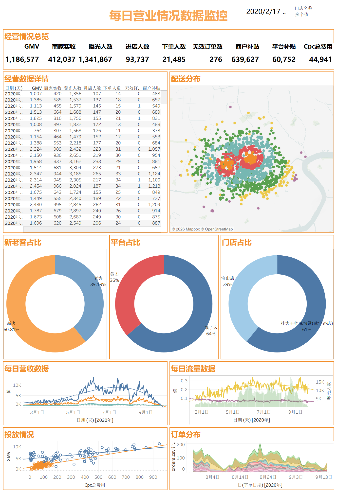
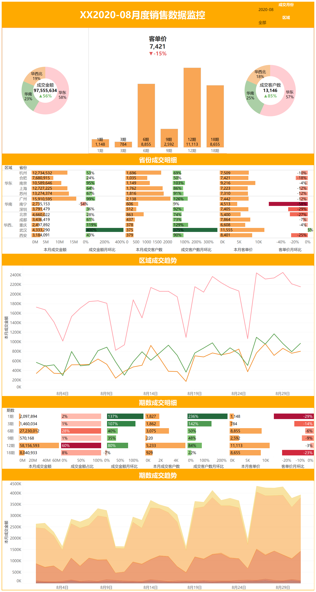

数据可视化仪表盘Data Visualization Dashboards
两张按业务问题组织的监控看板。做的时候主要在处理三类事：把不同粒度的数据对齐到同一张图上、 用环比而不是绝对值说明变化、以及在指标变动的同一屏里给出可以追下去的下钻维度。 数据来自课程实训数据集，不是真实业务数据。 Two monitoring dashboards organised around business questions. Three things took most of the effort: aligning data at different grains onto one view, describing change by period-over-period rather than absolute values, and putting the drill-down dimensions that explain a movement on the same screen. Data is from a course dataset, not real business data.
每日营业情况数据监控Daily Operations Monitoring
外卖业务的单日经营看板。顶部一行是总览指标（GMV、商家实收、曝光人数、进店人数、 下单人数、无效订单数、商户补贴、平台补贴、Cpc 总费用），往下依次是逐日明细表、配送地理分布、 新老客与平台/门店占比、每日营收与流量趋势、投放费用与 GMV 的关系、订单量分布。 其中投放那一块做成了散点加拟合线——Cpc 花到多少开始不划算，看斜率比看单点数字直观。 A single-day operations view for a food-delivery business. The top row holds the headline metrics (GMV, merchant revenue, impressions, store visits, orders, invalid orders, merchant and platform subsidies, total Cpc spend); below it are the daily detail table, delivery geography, new-vs-returning and platform/store splits, revenue and traffic trends, spend-versus-GMV, and order distribution. The spend panel is a scatter with a fitted line — the slope shows where Cpc stops paying for itself better than any single number does.

点击图片在新标签页打开原始尺寸Click to open the full-size image in a new tab
月度销售数据监控Monthly Sales Monitoring
月度维度的成交看板，重点在「哪些区域在涨、哪些在跌」。分成三个层次： 顶部是客单价与区域占比；中间按省份列出成交金额、成交客户数、客单价三项及其环比， 用左右分向的条形图让增幅和跌幅一眼可分；底部是按「期数」（1/3/6/9/12/18 期）切的明细与趋势。 环比用颜色深浅而不是只写百分比——扫描整列时，颜色比数字先被看到。 A monthly transaction view, focused on which regions are growing and which are not. Three levels: unit price and regional split at the top; per-province transaction value, customer count and unit price with period-over-period change in the middle, using back-to-back bars so growth and decline separate at a glance; and a breakdown and trend by contract term (1/3/6/9/12/18 periods) at the bottom. Period-over-period change is encoded by colour depth rather than the number alone — scanning a column, the colour registers before the digits do.

点击图片在新标签页打开原始尺寸Click to open the full-size image in a new tab